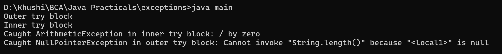

10. Write a Java program to show an example of nested try block.
class main {
public static void main(String[] args) {
try {
System.out.println("Outer try block");
try {
System.out.println("Inner try block");
int result = 10 / 0;
} catch (ArithmeticException e) {
System.out.println("Caught ArithmeticException in inner try block: " + e.getMessage());
}
String str = null;
System.out.println(str.length());
} catch (NullPointerException e) {
System.out.println("Caught NullPointerException in outer try block: " + e.getMessage());
} catch (Exception e) {
System.out.println("Caught a general exception: " + e.getMessage());
}
}
}
